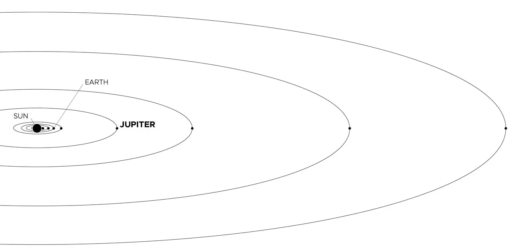

Jüpiterin dış görünüşü
Jüpiter'in imza niteliğindeki çizgileri ve girdapları aslında hidrojen ve helyum atmosferinde yüzen
soğuk, rüzgarlı amonyak ve su bulutlarıdır. Koyu turuncu çizgilere kuşaklar, daha açık bantlara ise
bölgeler denir ve zıt yönlerde doğuya ve batıya doğru akarlar. Jüpiter'in ikonik Büyük Kırmızı Lekesi,
Dünya'dan daha büyük ve yüzlerce yıldır süren dev bir fırtınadır.
Gezegenlerin kralı, adını Roma mitolojisindeki tanrıların kralı Jüpiter'den almıştır. Uydularının çoğu
da Jüpiter veya Yunan karşılığı Zeus ile ilişkilendirilen mitolojik karakterlerden, figürlerden
almıştır.
Jüpiter'in yaşama elverişliliği
Jüpiter'in ortamı muhtemelen bildiğimiz şekliyle yaşama elverişli değildir. Bu gezegeni karakterize eden
sıcaklıklar, basınçlar ve malzemeler büyük ihtimalle organizmaların uyum sağlayabileceğinden çok daha uç
ve değişkendir.
Jüpiter gezegeni canlıların tutunması için pek olası bir yer olmasa da, birçok uydusundan bazıları için
aynı şey geçerli değildir. Europa, güneş sistemimizin başka yerlerinde yaşam bulma olasılığı en yüksek
yerlerden biridir. Buzlu kabuğunun hemen altında, yaşamın desteklenebileceği uçsuz bucaksız bir okyanus
olduğuna dair kanıtlar vardır.
Jüpiterin boyutu
Jüpiter, 43.440,7 mil (69.911 kilometre) yarıçapıyla, Dünya’dan **11 kat daha geniş** bir gezegendir.
Eğer Dünya bir üzüm büyüklüğünde olsaydı, Jüpiter’in boyutu yaklaşık bir basketbol topu kadar olurdu.
Bu, Jüpiter’in Güneş Sistemi’ndeki en büyük gezegen olduğunu anlamamızı sağlar.
Jüpiter, Güneş’ten ortalama 484 milyon mil (778 milyon kilometre) uzaklıktadır. Bu mesafe, **5,2
astronomik birim** (AU) olarak ifade edilir. **Bir astronomik birim**, Dünya ile Güneş arasındaki
mesafeyi temsil eder. Bu kadar uzakta olduğu için, Güneş’ten çıkan ışığın Jüpiter’e ulaşması **43
dakika** sürer.
Bu bilgiler, Jüpiter’in boyutunu ve Güneş Sistemi’ndeki yerini anlamak için oldukça önemlidir.

Jüpiter'in yörünge ve dönüşü
Jüpiter, güneş sistemindeki en kısa güne sahiptir. Jüpiter'deki bir gün yalnızca yaklaşık 10 saat sürer
(Jüpiter'in bir kez dönmesi veya etrafında dönmesi için gereken süre) ve Jüpiter Güneş etrafındaki tam
bir yörüngeyi (Jüpiter zamanına göre bir yıl) yaklaşık 12 Dünya yılında (4.333 Dünya günü) tamamlar.
Ekvatoru, Güneş etrafındaki yörünge yoluna göre sadece 3 derece eğiktir. Bu, Jüpiter'in neredeyse dik
döndüğü ve diğer gezegenler kadar uç mevsimlere sahip olmadığı anlamına gelir.
Jüpiter’in uyduları
Dört büyük uydusu ve çok sayıda küçük uydusuyla Jüpiter, bir nevi minyatür güneş sistemi oluşturuyor.
Jüpiter'in Uluslararası Astronomi Birliği tarafından resmen tanınan 95 uydusu vardır . En büyük dört
uydu - Io, Europa, Ganymede ve Callisto - ilk olarak 1610 yılında astronom Galileo Galilei tarafından
teleskopun erken bir versiyonunu kullanarak gözlemlenmiştir. Bu dört uydu bugün Galilean uyduları olarak
bilinir ve güneş sistemimizdeki en büyüleyici yerlerden bazılarıdır.
Io, güneş sistemindeki en volkanik olarak aktif gövdedir. Ganymede, güneş sistemindeki en büyük uydudur
(Merkür gezegeninden bile daha büyüktür). Callisto'nun çok az sayıdaki küçük krateri, küçük bir yüzey
aktivitesinin varlığını gösterir. Yaşam için gerekli bileşenleri barındıran bir sıvı su okyanusu,
NASA'nın 2024'te fırlatılması planlanan Europa Clipper görevinin hedefi olan Europa'nın donmuş kabuğunun
altında yatıyor olabilir. daha fazla bilgi için
tıklayın
Jüpiter'in oluşumu
Jüpiter, yaklaşık 4,6 milyar yıl önce güneş sisteminin geri kalanıyla birlikte şekillendi. Yerçekimi,
dönen gazı ve tozu bir araya getirerek bu gaz devini oluşturdu. Jüpiter, Güneş'in oluşumundan sonra
kalan kütlenin çoğunu aldı ve güneş sistemindeki diğer gövdelerin toplam malzemesinin iki katından
fazlasına sahip oldu. Aslında, Jüpiter bir yıldızla aynı bileşenlere sahiptir, ancak tutuşacak kadar
büyük olmamıştır.
Jüpiter, yaklaşık 4 milyar yıl önce Güneş Sistemi'nin dış kısmındaki mevcut konumuna yerleşti ve Güneş'e
uzaklık bakımından beşinci gezegen oldu.

Jüpiter’in yapısı
Jüpiter'in bileşimi Güneş'inkine benzer - çoğunlukla hidrojen ve helyum. Atmosferin derinliklerinde
basınç ve sıcaklık artar ve hidrojen gazı sıvıya sıkıştırılır. Bu Jüpiter'e güneş sistemindeki en büyük
okyanusu verir - su yerine hidrojenden oluşan bir okyanus. Bilim insanları, gezegenin merkezine doğru
belki de yarı yolda olan derinliklerde basıncın o kadar arttığını düşünüyor ki elektronlar hidrojen
atomlarından sıkıştırılıyor ve sıvıyı metal gibi elektriksel olarak iletken hale getiriyor. Jüpiter'in
hızlı dönüşünün bu bölgede elektrik akımları oluşturduğu, sıvı metalik hidrojenin dönmesinin bir dinamo
gibi davranarak gezegenin güçlü manyetik alanını oluşturduğu düşünülüyor.
Daha derinlerde, Jüpiter'in merkezi çekirdeği uzun zamandır bir gizemdi. Bilim insanları Jüpiter'in
çoğunlukla hidrojen ve helyum gazlarının homojen bir karışımı olduğunu ve 4 milyar yıl önce embriyonik
güneş sisteminin o bölgesinde dönen enkaz ve küçük nesnelerden oluşan buz, kaya ve metalden oluşan daha
ağır elementlerden oluşan küçük, katı bir çekirdeği çevrelediğini teorileştirdiler.
Jüpiter'in yerçekimini ve manyetik alanını ölçen NASA'nın Juno uzay aracı, çekirdeğin beklenenden çok
daha büyük olduğunu ve katı olmadığını gösteren veriler buldu. Bunun yerine, etrafındaki metalik
hidrojenden belirgin bir şekilde ayrılmamış, kısmen çözünmüş haldedir ve bu da araştırmacıları çekirdeği
seyreltik veya "bulanık" olarak tanımlamaya yöneltmiştir.
Jüpiter’in atmosferi
Jüpiter, rengi ve hareketleriyle dikkat çeken karmaşık bir atmosfer yapısına sahiptir. Bulut bantları ve
gezegenin farklı bölgelerine dağılmış siklonik fırtınalar, Jüpiter’in yüzeyinde renkli bir desen
oluşturur. Atmosferinde, yaklaşık 44 mil (71 kilometre) boyunca uzanan üç ana bulut katmanı bulunur. En
üst katmanda muhtemelen amonyak buzları, orta katmanda amonyum hidrosülfür kristalleri, en altta ise su
buzu ve buharı yer alır.
Jüpiter’in üst atmosferindeki canlı renkler, gezegenin daha sıcak iç katmanlarından yükselen ve kükürt
ile fosfor içeren gazların püskürmesinden kaynaklanıyor olabilir. Jüpiter’in hızlı dönüşü – gezegen
kendi ekseni etrafında her 10 saatte bir döner – güçlü jet akımları oluşturur. Bu akımlar, bulutların
uzun mesafeler boyunca hareket etmesine neden olur ve koyu renkli kuşaklar ile parlak bölgeler
oluşturur.
Gezegenin yüzeyinde katı bir yapı olmadığı için, Jüpiter’deki fırtına lekeleri ve bulut yapıları uzun
yıllar boyunca bozulmadan kalabilir. Örneğin, ekvatordaki hakim rüzgarların saatte 335 mil (539
kilometre) hıza ulaştığı gözlemlenmiştir. Jüpiter’in en ünlü atmosferik özelliği olan Büyük Kırmızı
Leke, Dünya’nın iki katı genişliğinde bir fırtına sistemidir ve 300 yıldan uzun süredir
gözlemlenmektedir. Daha küçük üç fırtınanın birleşmesiyle oluşan Küçük Kırmızı Leke, Büyük Kırmızı
Leke’nin yaklaşık yarısı büyüklüğündedir.
juno görevinden bulgular
NASA’nın Juno uzay aracı, Jüpiter’in bulutlarının altındaki olaylara dair çarpıcı bilgiler sağlamıştır.
Bu verilere göre Jüpiter’deki siklonların üst katmanları daha sıcak ve düşük yoğunluklu iken, alt
katmanlar daha soğuk ve yoğun bir yapıya sahiptir. Antisiklonlar ise tam tersine, üstte daha soğuk,
altta ise daha sıcak özellikler gösterir.
Juno ayrıca fırtınaların beklenenden çok daha derin olduğunu tespit etti. Örneğin, bazı fırtınalar bulut
tepelerinin 60 mil (100 kilometre) altına kadar uzanırken, Büyük Kırmızı Leke gibi bazı yapılar 200 mil
(350 kilometre) derinliğe ulaşır. Bu, fırtınaların yalnızca bulut seviyelerinde değil, atmosferin daha
derin bölgelerinde de etkili olduğunu gösterir.
Büyük Kırmızı Leke’nin boyutları ve yoğunluğu, bu fırtınanın Jüpiter’in yerçekimi alanını bile
etkileyebileceğini ortaya koyuyor. Juno, gezegenin ünlü fırtınasının üzerinden geçtiği sırada, yerçekimi
imzasını tespit ederek fırtınanın yaklaşık 300 mil (500 kilometre) derinliğe indiğini doğrulamıştır.
Jüpiter’in kuşakları ve jet akımı
Jüpiter, güçlü doğu-batı yönlü rüzgarların (jet akımları) ayrıldığı beyaz ve kırmızımsı bulut bantlarına
sahiptir. Bu jet akımları, gezegenin atmosferinde yaklaşık 2.000 mil (3.200 kilometre) derinliğe kadar
ulaşabilir. Juno’dan elde edilen veriler, bu jet akımlarının atmosferdeki amonyak gazının hareketiyle
uyumlu olduğunu göstermiştir. İlginç bir şekilde, Jüpiter’in kuşakları ve bölgeleri, su bulutlarının
yaklaşık 40 mil (65 kilometre) altına kadar uzanır. Sığ derinliklerde, kuşaklar komşu bölgelerden daha
parlak mikrodalga ışıma yaparken, daha derin seviyelerde durum tersine döner.